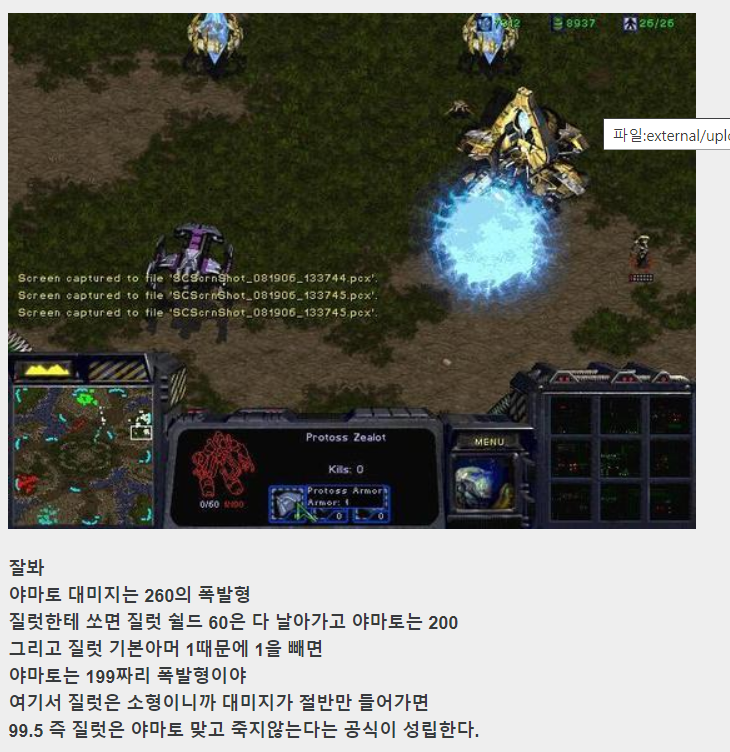
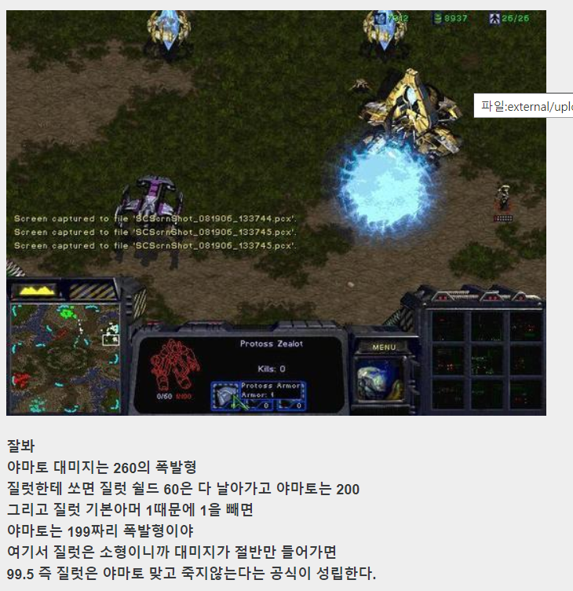

MEME
- (19)후방주의 므흣한 사진 모음
- 나도 내가 징징거리고 눈꼴시려운건 알고 있는데
- 파일런의 건물 소환 가능 범위는 대칭이 아니야
- 나 오늘 버스에서 끔찍하게 살해당할 뻔했다.
Explain of Internet Meme
'Internet Meme', 줄여서 'Meme(밈)'
이라고 부른다. 인터넷에서 유행하는 특정한 문화 요소와 컨텐츠를 이르는 말이다.
1976년 리처드 도킨스가 저서 '이기적 유전자'에서 처음 제시한 학술 용어 밈(meme)에서 파생된 개념이다.
본래 밈은 마치 인간의 유전자(gene)와 같이 '자기복제적 특징을 갖고, 번식해 대를 이어 전해져오는 종교나 사상, 이념 같은 정신적 사유'를 의미했다.
이것이 '패러디되고 변조되며 퍼지는 작품 속 문화 요소'라는 의미로 확대된 것은 90년대 후반에서 2000년대 초반으로, 인터넷이 보급된 뒤 폭발적으로 늘어나는 새로운 방식의 문화 전파 현상을 도킨스의 용어를 빌려 표현한 것이다.
특히 영미권 커뮤니티에서 채팅이나 UCC 활동을 할 때 쓰이는 필수요소를 밈이라 일컫게 되면서 네티즌 사이에서 널리 쓰이게 되었다.
또한, 밈을 제작하거나 유포하는 사람을 '미머'(Memer)라고 하기도 한다.
수많은 밈이 있지만 시험용으로 4개만 만들어봤습니다.
대한민국 밈의 예시
 
